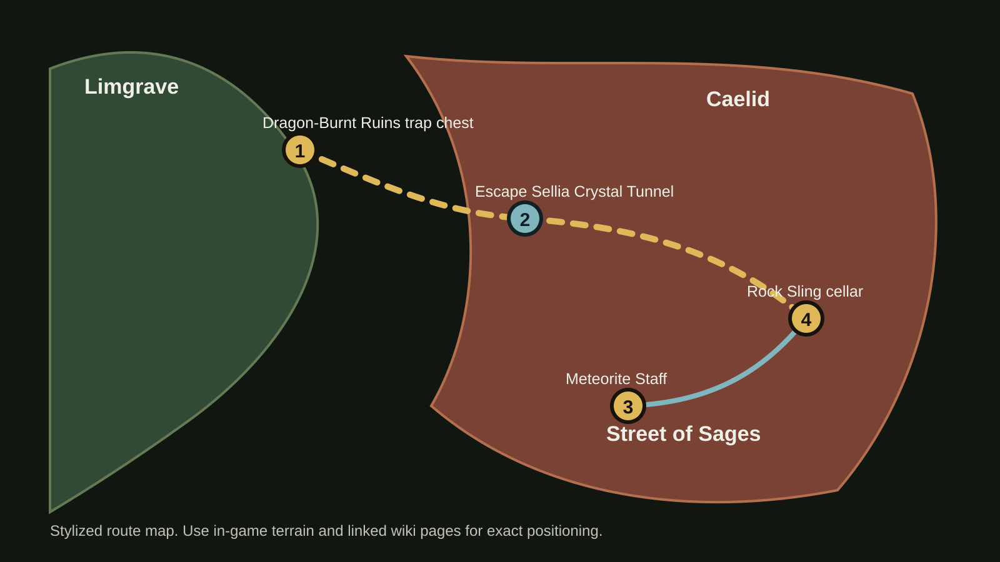
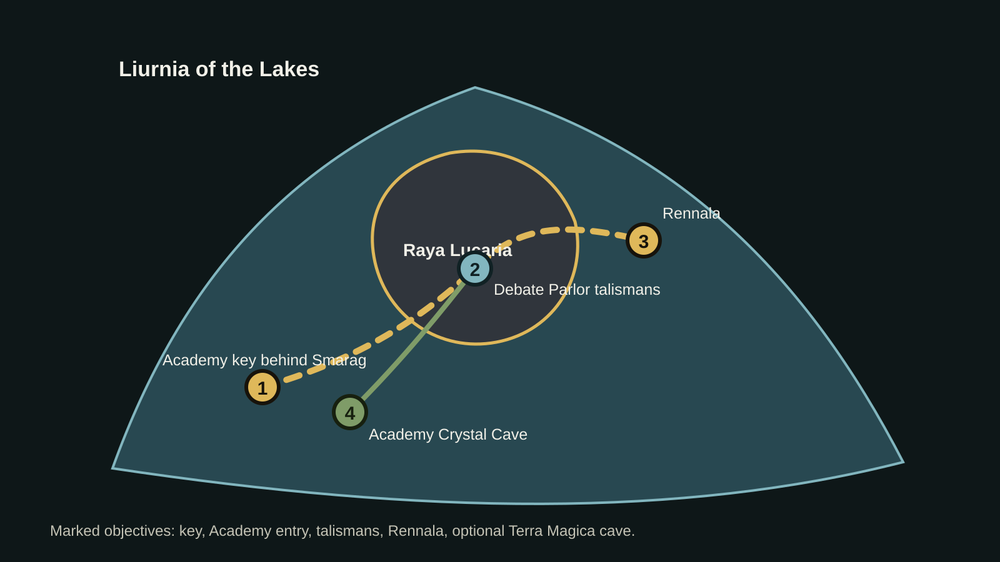
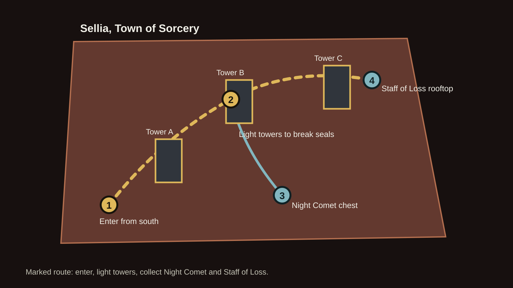
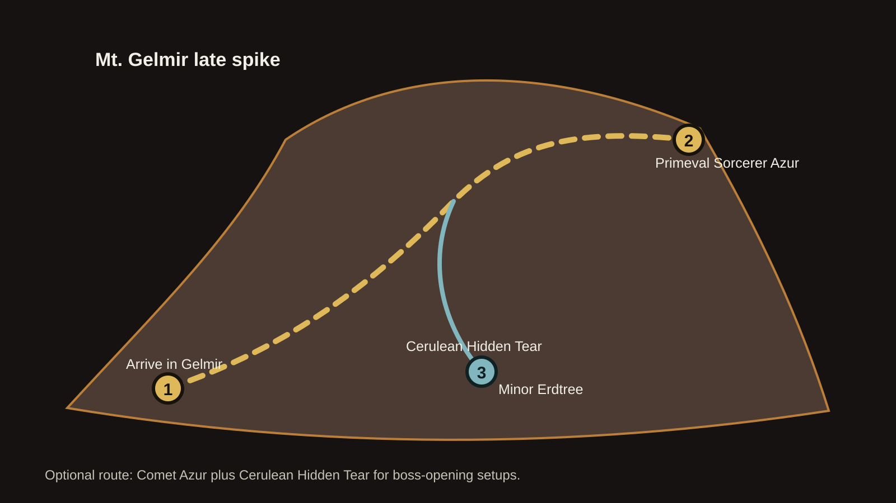

Starting class
Astrologer is the smoothest start: high Intelligence, early staff, and enough Mind to cast comfortably.
Fresh save mage route
Start as Astrologer, grab the Meteorite Staff and Rock Sling early, add Carian Slicer for close fights, then graduate into Night Comet and boss-melting setup spells.
Build identity
Astrologer is the smoothest start: high Intelligence, early staff, and enough Mind to cast comfortably.
Vigor first, then Intelligence and Mind. Aim for 25 Vigor before you get greedy with damage.
Open with Rock Sling for stance pressure, punish close enemies with Carian Slicer, and use Night Comet when enemies dodge normal casts.
Progress
Step by step
Choose Astrologer, take Golden Seed as your keepsake, and keep the Short Sword as a backup only. Spend early levels on Vigor until survival feels stable, then push Intelligence and Mind.
Rest at Gatefront to meet Melina and get Torrent. Collect the map fragment at Gatefront Ruins, then gather nearby Golden Seeds and Sacred Tears before fighting anything dramatic.
Clear the Waypoint Ruins cellar boss and unlock Sorceress Sellen. She becomes your early spell shop and later accepts the Royal House Scroll for Carian Slicer.
Take the Dragon-Burnt Ruins trap chest to Sellia Crystal Tunnel, escape outside, then ride southwest to Street of Sages Ruins. Grab Meteorite Staff from the ruined building and Rock Sling from the nearby cellar.
Find the Royal House Scroll in southern Limgrave, give it to Sellen, then buy Carian Slicer. This turns the build from "wizard with a pebble" into a close-range blender.
Rock Sling makes both fights friendlier because it can break stance from a safe range. Summons are completely fine; this build is about having fun, not auditioning for a no-hit montage.
Ride to the island west of Raya Lucaria and loot the key behind Glintstone Dragon Smarag. You can grab it without fighting the dragon if you stay calm and keep moving.
After reaching the Debate Parlor area, grab Radagon Icon for faster casting and Graven-School Talisman for more sorcery damage. These stay useful for a long time.
Rennala resists magic, so lean on Rock Sling, Carian Slicer, and summons if needed. Afterward, respec if your stats wandered.
Return to Caelid and solve Sellia, Town of Sorcery by lighting the towers. Loot Night Comet and Staff of Loss. Staff of Loss boosts invisibility sorceries, and Night Comet is excellent because many enemies do not dodge it like normal projectiles.
Defeat the Erdtree Avatar at the northeastern Liurnia Minor Erdtree to get a Physick tear that boosts magic damage. Drink it before boss openings, then cast your highest-value spells.
Clear Academy Crystal Cave west of Raya Lucaria, beat the Crystalians, ride the elevator up, and loot Terra Magica. It creates a magic-damage zone for boss setups and big openings.
When you reach Mt. Gelmir, find Primeval Sorcerer Azur for Comet Azur and defeat the Mt. Gelmir Ulcerated Tree Spirit for Cerulean Hidden Tear. This is the classic "stand in Terra Magica and delete a health bar" setup.
Marked maps
Use the embedded Map Genie map for the actual pan-and-zoom world map, then use the custom route maps and atlas markers for this build's recommended stops.
Embedded via Map Genie. If the frame feels cramped on mobile, open it full-size in a new tab and use the atlas marker search terms below.




Interactive atlas
Use the filters, then click a marker. The map is a route aid, not a pixel-perfect world map; each card includes a wiki link when exact placement matters.
Level plan
Astrologer starts at level 6 with 9 Vigor, 15 Mind, 9 Endurance, 8 Strength, 12 Dexterity, 16 Intelligence, 7 Faith, and 9 Arcane. This plan favors comfort first, then damage.
| Level | Vigor | Mind | End | Str | Dex | Int | Why it matters |
|---|---|---|---|---|---|---|---|
| 6 | 9 | 15 | 9 | 8 | 12 | 16 | Astrologer baseline. Play safe until Torrent and Sellen are online. |
| 15 | 16 | 16 | 9 | 8 | 12 | 17 | Early Vigor keeps the build from folding while you sprint for gear. |
| 25 | 20 | 17 | 10 | 8 | 12 | 22 | Enough Intelligence for stronger spell scaling while still surviving Limgrave. |
| 35 | 25 | 18 | 10 | 8 | 12 | 26 | Comfortable Stormveil target. Rock Sling and Slicer carry damage. |
| 45 | 28 | 20 | 11 | 8 | 12 | 32 | Raya Lucaria feels better with more FP and enough Vigor for mistakes. |
| 55 | 30 | 22 | 12 | 8 | 12 | 40 | Midgame caster breakpoint. Night Comet starts feeling excellent. |
| 65 | 35 | 24 | 12 | 8 | 12 | 45 | More health for Caelid and Altus. Upgrade Staff of Loss if using Night Comet. |
| 75 | 38 | 26 | 13 | 8 | 12 | 52 | Damage climbs without making the build too fragile. |
| 85 | 40 | 28 | 14 | 8 | 12 | 60 | Great Comet Azur and late sorcery threshold. Use Terra Magica setups here. |
| 100 | 45 | 30 | 15 | 8 | 12 | 70 | Strong late build. Push toward 80 Intelligence only after health feels safe. |
| 125 | 50 | 35 | 18 | 8 | 12 | 80 | Endgame mage. Extra points can go Vigor, Mind, Endurance, or Dexterity for Moonveil. |
Raise Strength to 12 and Dexterity to 18, usually after level 45. Take those points from Intelligence temporarily, then respec after Rennala if it feels messy.
Leave Strength and Dexterity alone. Put spare levels into Vigor until 40, Intelligence until 60, then Mind and Intelligence depending on whether you need casts or damage.
Final feel
Meteorite Staff for Rock Sling. Staff of Loss for Night Comet once upgraded. Keep a light melee backup if you like, but Carian Slicer usually covers that job.
Rock Sling, Carian Slicer, Night Comet, Glintstone Pebble or Great Glintstone Shard, Terra Magica, and Comet Azur if you take the late route.
Radagon Icon, Graven-School Talisman, Green Turtle Talisman for comfort, and any defensive talisman while learning bosses.
Magic-Shrouding Cracked Tear plus a defensive tear for exploration. Swap in Cerulean Hidden Tear when using Comet Azur setups.
Shareable link
After this repo is pushed, enable GitHub Pages from the repository root. The public link will look like this:
https://grimykwuarm.github.io/Elden-Ring-Builds/